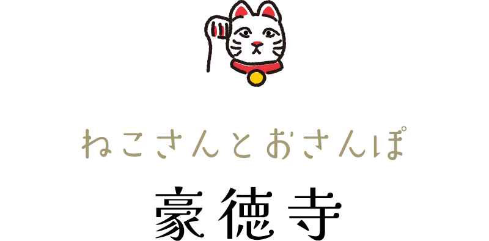

招き猫で有名な大谿山豪徳寺へは小田急線豪徳寺駅と世田谷線山下駅から徒歩で約15分。
豪徳寺駅の北側には山下商店街、南側には豪徳寺商店街が広がっています。
レトロモダンな雰囲気の中、最近話題のスイーツ店も点在して、食べ歩きが楽しめるスポットです。
ぶらり食べて・見て・楽しみながら、豪徳寺のねこたちに会いにいってみませんか？

山下商店街エリア
小田急線豪徳寺駅より北へ広がる山下商店街は1951年発足された商店街。
昔ながらの雰囲気はそのまま、最近話題のスイーツ店など点在し、毎年秋に開催される「山下秋の味覚まつり」が人気です。
豪徳寺商店街エリア
小田急線豪徳寺駅より南へ広がる豪徳寺商店街はかつては豪徳寺の参道でした。別名「たまにゃん通り」とも呼ばれています。
約100年の歴史をもつ豪徳寺市場や通りには新しい個性的なショップも増えて、食べ歩きにぴったりなスイーツも点在しています。
豪徳寺エリア
小田急線豪徳寺駅より南へ広がる豪徳寺商店街はかつては豪徳寺の参道でした。別名「たまにゃん通り」とも呼ばれています。 約100年の歴史をもつ豪徳寺市場や通りには新しい個性的なショップも増えて、食べ歩きにぴったりなスイーツも点在しています。
大谿山 豪徳寺
大谿山 豪徳寺（だいけいじ ごうとくじ）は、世田谷区にある曹洞宗の寺院です。
彦根藩主・井伊家の江戸における菩提寺で、井伊家ゆかりの文化財が数多く所蔵されています。
境内には、国指定史跡の豪徳寺井伊家の墓所があります。
また、招き猫の発祥の地とも言われ、10000体とも言われる奉納された招福猫児に会いに行く観光客も
多く、多くの方から愛されているお寺です。
なぜ招き猫で有名？
彦根藩主の井伊直孝が鷹狩りの帰り道、小さな寺の前を通りかかると、門前で一匹の猫が手招きされ立ち寄ったところ、突然雷雨に。住職の愛猫「たま」のおかげで落雷の難を逃れ、和尚との話も楽しめたその幸運にいたく感動したそう。
それを機に荒れていた寺を改築し、井伊家の菩提寺になったと伝えられています。豪德寺では、福を招いた猫を「招福猫児（まねきねこ）」と呼び、お祀りする招福殿が建てられました。家内安全、心願成就が約束されると世間に広く知られるようになりました。
猫登る三重塔
塔には実はいくつかの猫が飾られています。
全部で何体いるかな？
圧巻！ 猫様たち
お堂の横には隙間もないほど大小さまざまな招福猫児が並んでいます。願いが成就したあとに返納すると、さらに御利益がいただけるといわれていて、縁起のいいスポットとして海外からも訪れる人たちが増えています。
招き猫
豪徳寺の招き猫は小判を持たず
右前足をあげているよ